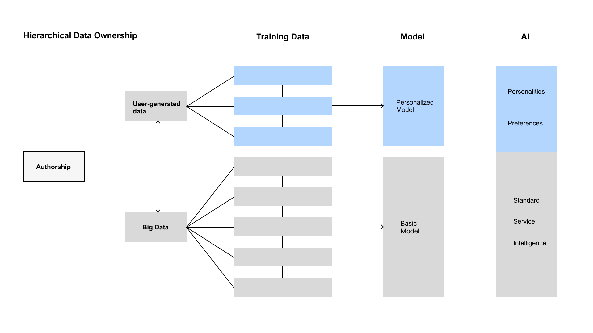
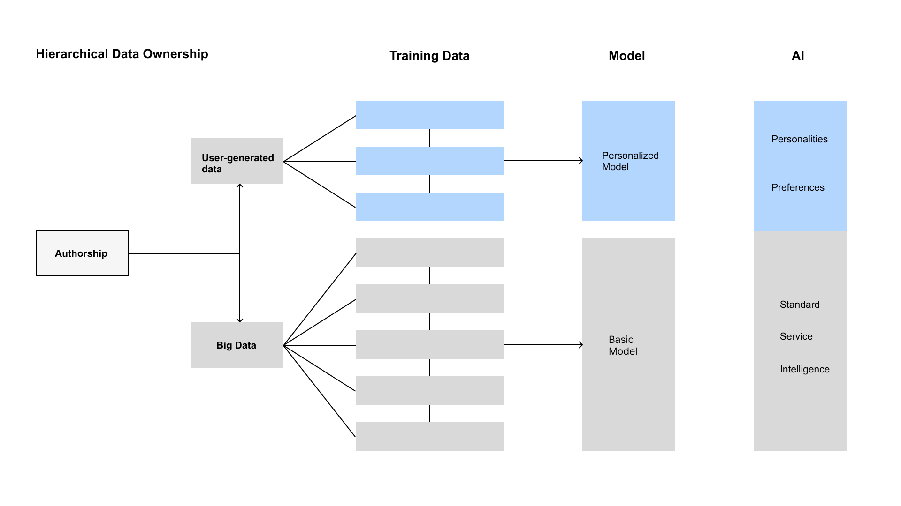

Zihe Wang
Table of Contents
1 – Systems
Featured Image
An analysis of a complex world system.
.jpg)
1 – Systems
2-1 – Authorship
Authorship philosophy and examples
Authorship in Uber System.

2-2 – Zine
Authorship
Authorship in Uber System.

 



3 – Politics
Analysis of Smart City Parking Management System
The smart city parking management system aims to reduce the time spent searching for parking spaces and alleviate urban traffic congestion in Manhattan. Data collected includes parking space availability and usage from OpenStreetMap and Parkopedia API, real-time occupancy from Parkopedia API, traffic flow and congestion from Google Traffic, user satisfaction from Google Reviews, and parking-related traffic accidents from the NYC DOT. These datasets provide a comprehensive view of parking efficiency and its impact on traffic. The analysis will highlight areas for improvement and support the hypothesis that smart parking systems can enhance urban mobility and reduce congestion.
Parking Space Availability and Usage
Real-time Parking Occupancy
Traffic Flow
User Satisfaction and Reviews
Parking-related Traffic Accidents
Data Virtualization
Interactive Map of Parking Lots in Manhattan
Parking Space Availability and Usage
Real-time Parking Occupancy
Parking Lots Price Distribution
Filtered Distance Distribution
4 – Governance

AR Navigation System Diagram
Jane starts her day by putting on her AR glasses as she leaves her apartment in Manhattan. The AR interface immediately displays her schedule, weather updates, and news headlines, seamlessly integrating with her morning routine. She heads to her car, which she parks in a nearby garage. As she drives, the AR system projects navigation instructions onto her windshield, showing her the fastest route to her office while highlighting available parking spots along the way.
Midway through her commute, Jane receives a notification that the nearest parking lot has a few spaces available. The AR system guides her to the entrance, displaying green markers for available spots. Jane effortlessly follows the arrows projected on the ground, leading her to an open space. Once parked, her AR glasses confirm the parking fee and time, allowing her to complete the payment through her mobile app.
During her lunch break, Jane has a doctor's appointment and plans to do some shopping. She inputs her destinations into the AR system, which calculates the optimal routes and parking availability at each location. The system suggests a nearby garage for her doctor's visit, displaying the shortest path and indicating the number of free spots. After her appointment, she heads to the shopping mall, where the AR system again provides real-time parking guidance.
At the end of the day, Jane heads home. The AR system shows the fastest route, avoiding traffic congestion. It highlights alternative paths if there are any delays, ensuring a smooth drive back. As she arrives home, the AR system deactivates, and Jane seamlessly transitions back to her daily routine, having saved time and reduced the stress associated with parking in a bustling city like Manhattan.